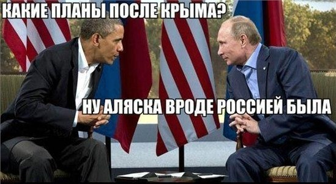

返回主页
阿拉斯加以前是俄罗斯的

Retter is Better, WE Create and Deliver Real Value!
俄语配音（设计台词）
奥巴马(lawyer)：在克里米亚之后你还有什么计划？
普京(Siloviki)：阿拉斯加（Alaska ）以前是俄罗斯的。
（早前3月21日一名匿名者在白宫请愿网站发布请愿声明，呼吁人们投票来支持把阿拉斯加还给俄罗斯。声明称：早在16000-10000年前，西伯利亚俄罗斯族就穿过白令海峡来到了北极海岸定居，阿留申人居住在了阿留申群岛。）
俄罗斯和德国在历史反思问题上的分歧与争论
Triumph and Tragedy
The Second World War, VI
Sir Winston S. Churchill
邓小平承诺"永不称霸"
美国重画中东地图
2014年前中东地图
库尔德人（Kurd）聚居区
中东作战地图（ISIS, 2014-6）
version:1.0; jobnet@188.com © retter2012.com